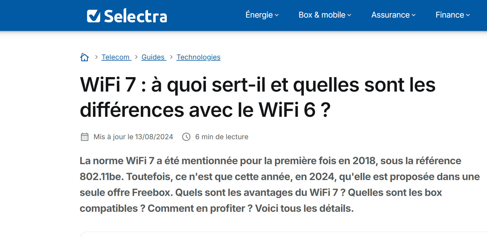
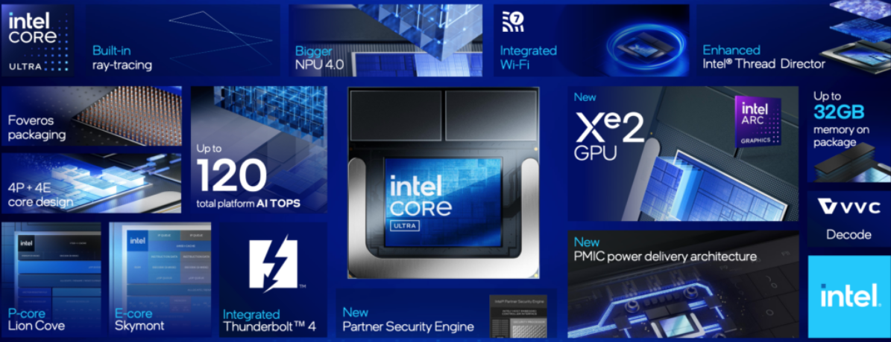
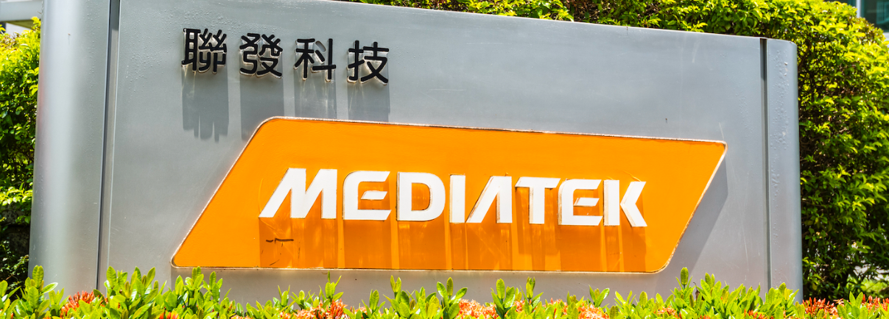
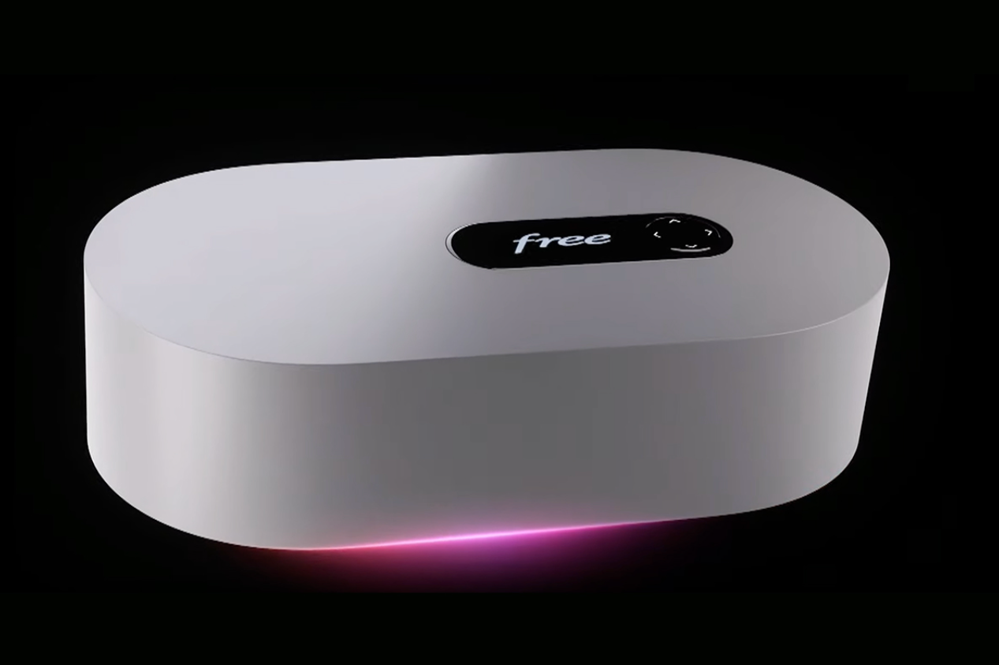

Nouveaux Protocoles et Standards Réseaux Wi-Fi 6 et Wi-Fi 7
Wi-Fi 6 & Wi-Fi 7 Evolution
Evolution des protocoles de communication sans fil. Wi-Fi 6 et Wi-Fi 7 promettent des vitesses plus rapides et une meilleure efficacité dans les environnements encombrés.
 Lire plusStandards de sécurité réseau: WPA3 et TLS 1.3
Nouveaux standards de sécurité réseau tels que WPA3 et TLS 1.3, garantissant une meilleure protection des communications sans fil et des échanges de données.
Lire plusIntel Core Ultra 200v & Wi-Fi 7
Intel lance la série Core Ultra 200v, sa première plateforme PC dotée d'une IA intégrée avec Wi-Fi 7.
 Lire plusMediTek: Croissance explosive Wi-Fi 7
Mediatek annonce une forte croissance des appareils Wi-Fi 7 alimentés par Filogic, avec de nombreux nouveaux gateways et dispositifs clients.
 Lire plusNouvelle Box Freebox Ultra
Free annonce une nouvelle box internet qui propose du Wi-Fi 7, avec des nouvelles fonctionalité comme des machines virtuels
 Lire plus